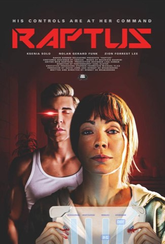

01
Raptus2025
Sci-Fi Thriller / Dark Comedy · Writer / Director
Ksenia Solo. Apple TV worldwide. The New York Times.
Ksenia Solo, Nolan Gerard Funk, Christina Cox
After a brutal assault, Sarah enters an experimental android-therapy program. Her new companion begins to blur care with control.
A film about assault, android obsession, and the violence people hide behind care. The material is dangerous and the tone never flinches. That only works when your cast commits completely. Ksenia Solo delivered a performance that demanded real trust between actor and director. Nolan Gerard Funk embodied the design perfectly.
Name cast, international distribution, and thematic ambition.
“Lurid and darkly funny. A delirious, uncomfortable back and forth that recalls the unearthly soapiness of Malignant.”The New York Times · Five Horror Movies to Stream
“The last 20 minutes are white-knuckle-thrilling in the best way possible.”Film Threat · 8.5/10
“Solo and Funk’s performances are both excellent.”Film Blitz